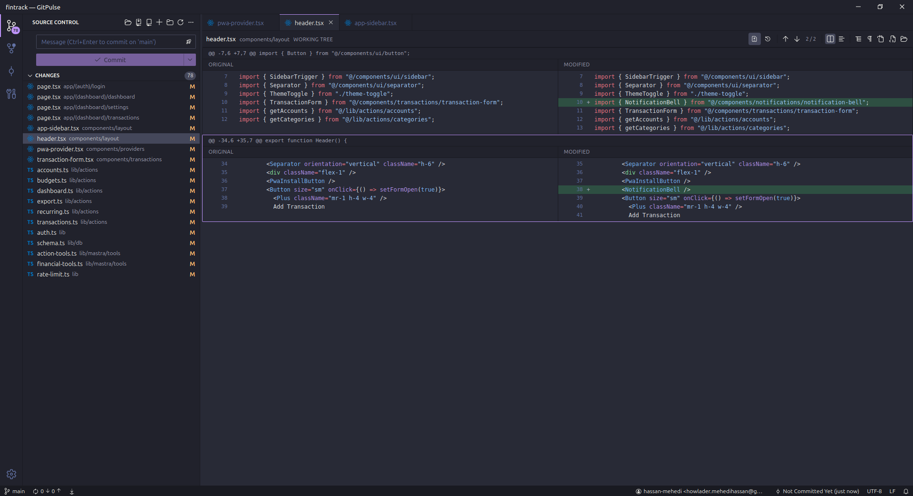
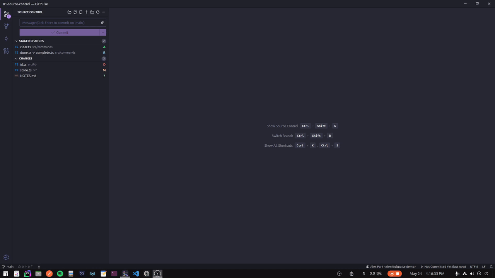
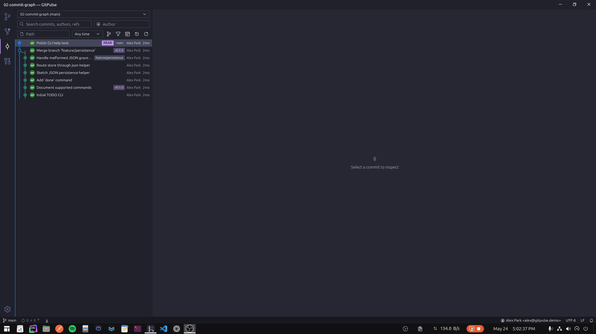
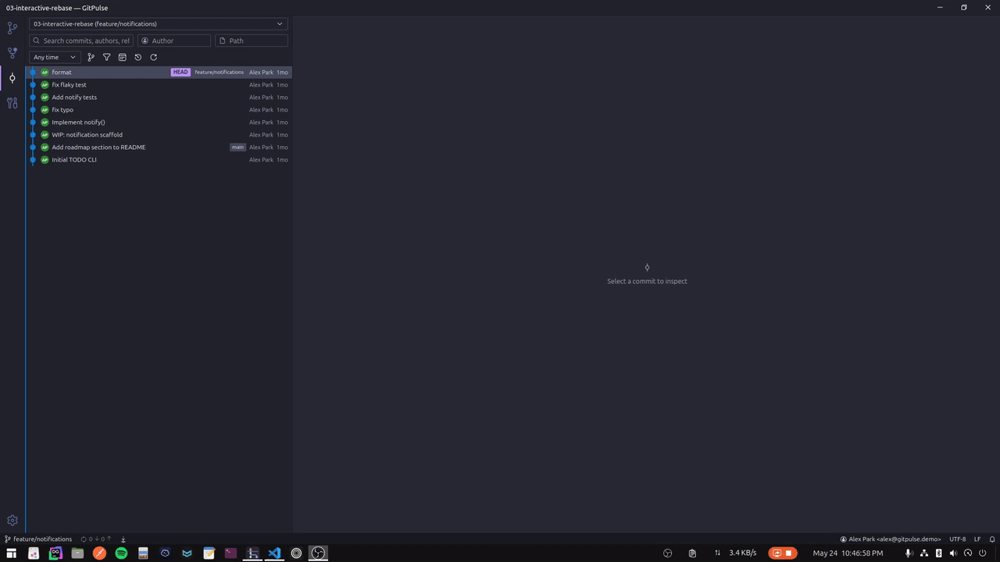
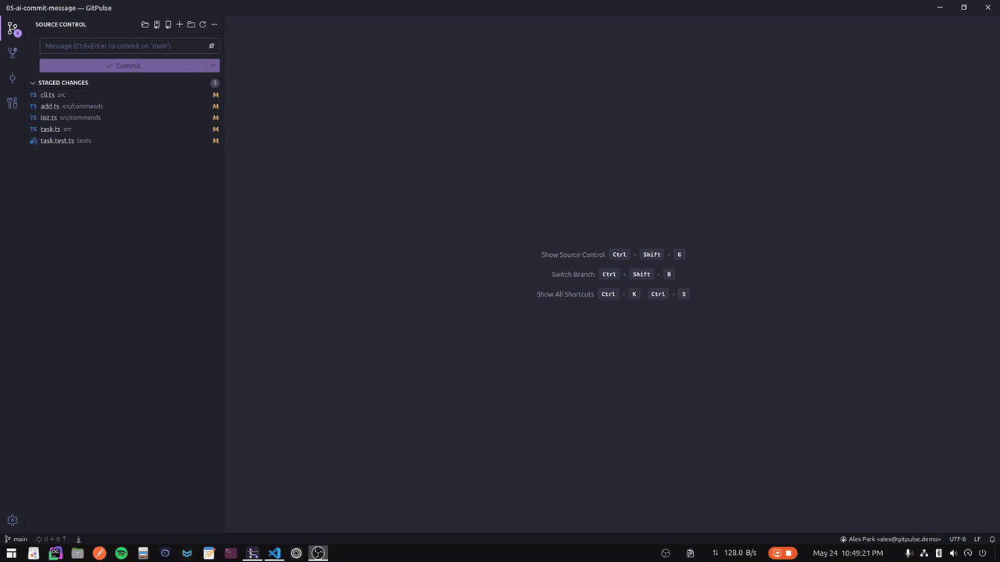

Stage exactly what you mean
Split or inline diffs, whitespace controls, word highlights, binary previews, and per-hunk or selected-line staging from the gutter.
Desktop Git client for developers
GitPulse is a VS Code-inspired desktop Git GUI built with Tauri, React, and Rust. It pairs familiar source-control workflows with a fast commit graph, rebase tools, blame, file history, worktrees, and optional AI commit messages.

GitPulse keeps common commits fast, then gives you deeper tools when history, branches, conflicts, or large repositories need more than a sidebar.
Split or inline diffs, whitespace controls, word highlights, binary previews, and per-hunk or selected-line staging from the gutter.
A virtualized graph stays responsive on deep repositories, with filters for author, branch, tag, and message.
Reorder, squash, fixup, edit, drop, or reword commits with drag and drop, then handle conflicts inline if they happen.
Open blame or file history from a file context menu, including history that crosses renames.
Create, switch, and prune worktrees alongside stashes, remotes, tags, and repository maintenance tools.
Use Ollama locally for a free private path, or configure OpenAI, Anthropic, DeepSeek, or any OpenAI-compatible provider.
The landing page uses the same product captures as the README, so visitors see the actual desktop app instead of abstract placeholders.

Stage, unstage, discard, review split diffs, and commit without changing mental models.

Inspect commits, compare changes, cherry-pick, revert, reset, and recover from reflog.

Plan a cleanup visually, then continue, abort, or resolve conflicts from the same app.

Accept current, incoming, or both, then edit the result and stage resolved files.

Keep parallel tasks clean while browsing file-specific commits and diffs.

Generate a draft from staged changes, reroll it, and edit before committing.
Latest release
Release bundles are published on GitHub. The download button always sends users to the latest published GitPulse release so they can choose the right installer for their operating system.
Local by default
GitPulse stores app settings, commit identities, AI provider configuration, and secrets locally. AI API keys stay on your machine and are only sent to the provider you configure.
For AI commit messages, Ollama gives you a fully local route: no API key, no hosted model call, and your staged diff stays on your laptop.
# Settings
settings.json in the app data directory
# AI provider secrets
secrets.json in the app data directory
# Linux
~/.local/share/com.gitpulse.app/
# macOS
~/Library/Application Support/com.gitpulse.app/
# Windows
%APPDATA%\com.gitpulse.app\Most setup issues are platform prerequisites or unsigned-bundle prompts. These are the same notes users see in the project README.
Install Git and make sure git --version works in a fresh terminal.
The macOS bundles are not code-signed yet. Right-click GitPulse in Applications, choose Open, then confirm Open again.
The Windows installer is currently unsigned. Click More info, then Run anyway if you trust the release.
The AppImage expects WebKitGTK 4.1, GTK 3, Ayatana AppIndicator 3, and Git on PATH.
Open a project folder, stage a hunk, browse the graph, and resolve a conflict without leaving the desktop client.
Download latest release